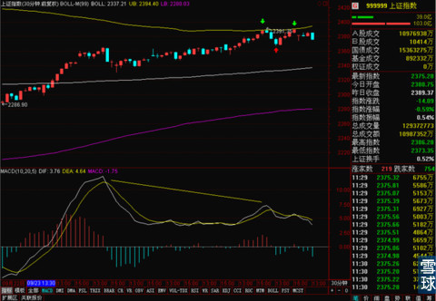
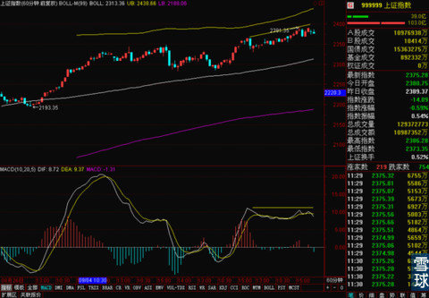
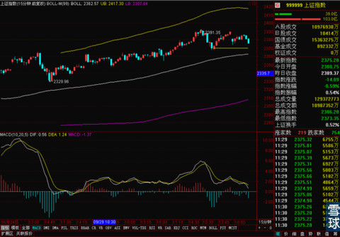

说下今天大盘，由于昨天美股暴跌，所以今天早盘，银行股全线低开。所以昨天说到的30分钟BOLL上轨又成为了压力线，这次完全没试探，直接就下来了。

30分钟线的MACD顶背离形态进一步确认，而且还将这个趋势传导到了60分钟。

据此判断，大盘下一周调整的可能性极大。
现在15分钟BOLL中轨在逐步抬高，走势也和之前预计的一样。果然是沿着昨天画出来的黄色水平线在移动。昨天下午的拉升没有预判到，是对走势波动性的考虑不足导致的，但是总体大方向的猜测是没有问题的。上证指数回踩15分钟BOLL几乎就是定局。

这也是很多技术分析入门了一段时间的小伙伴们经常被困扰的一个问题。
就是往往大方向判断的没错，但是一个洗盘就洗出去了，或者一个拉升就被骗进去了。这个例子估计能让大家明白一点怎么处理这种情况。为什么我昨天看到下午的拉升之后还敢的收盘后坚持说这个位置还是回调的几率大。原因其实很简单，我之前判断会回踩的依据是
一，MACD的形态走坏了。
二，30分钟BOLL上轨压力线很明显。
三，股指期货多次贴进过15分钟BOLL中轨，上证指数还没有。
那么拉升之后的结果来看腻？
第一，MACD的形态还是不乐观。
第二，30分钟BOLL上轨还是压力线，并没有盘中被这波拉升突破过去。
第三，股指期货依然明显的15分钟BOLL中轨附近移动，没有大举上攻迹象。
那么也就是说，这一波拉升还没有改变我支持我之前的看法三点中的任意一点。那么我就可以坚持一下，如果有一个条件被打破，那么就找下一个检验标准。打破二到三个，并且是有效打破。那么就承认分析失误，积极应对新情况。
所以，不要被一时的涨幅迷惑而忘记当初是怎么分析的过程，只要支持这个分析过程的要素都在，就不要被短期涨跌带动情绪。这也是我为什么经常说买股票之前的工作是做好计划，想好为什么要买，每一条在这个价位买这个股票的理由都写下来，希望他涨到多少，有什么依据判断它会涨到这个位置也都写下来。然后根据情况一步步调整。
 |
说下今天大盘，由于昨天美股暴跌，SaiLv 2014-10-10 13:12:58 |
Copyright © 1996-2014 SINA Corporation All Rights Reserved.